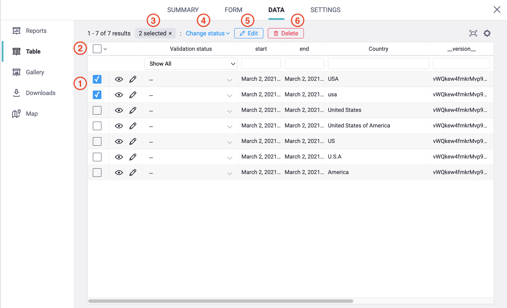
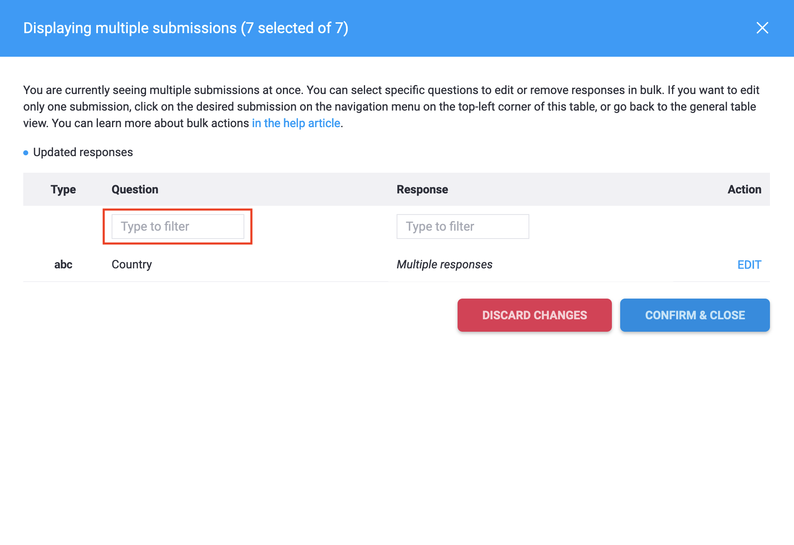
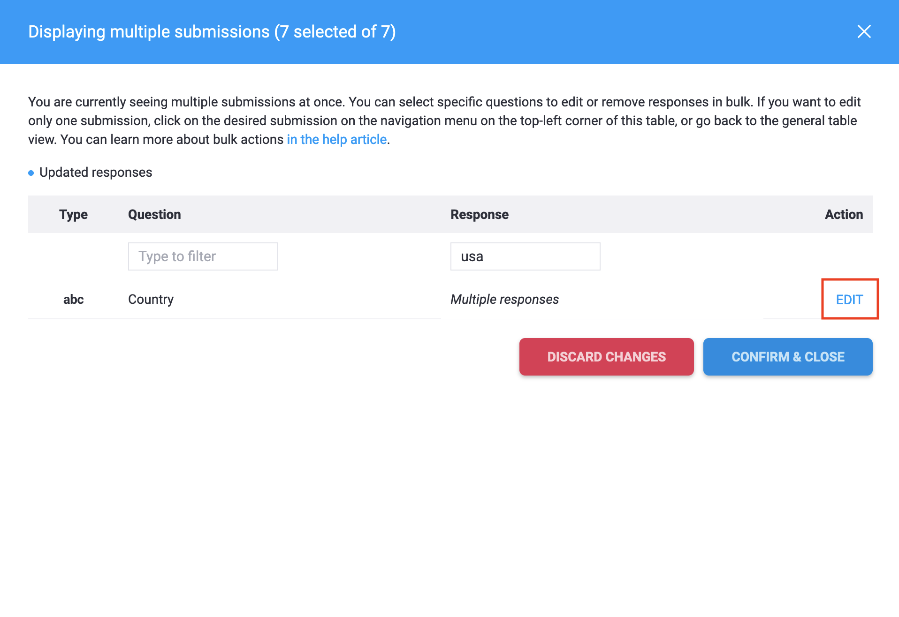
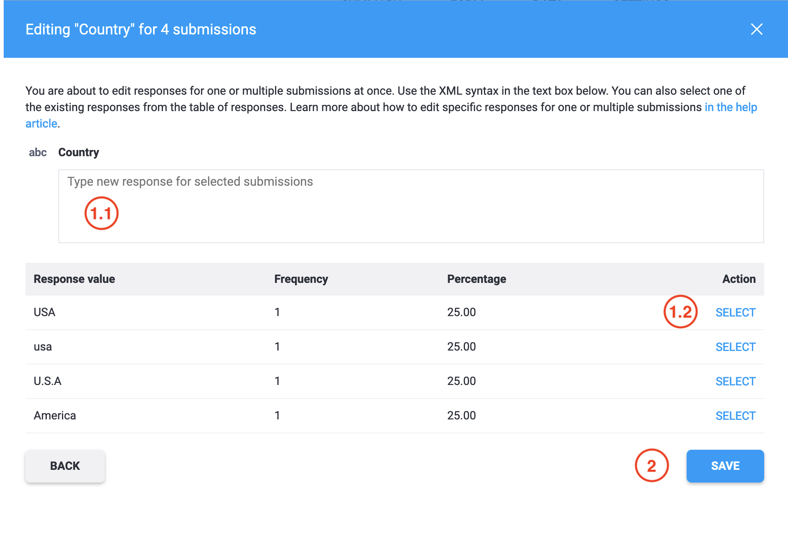
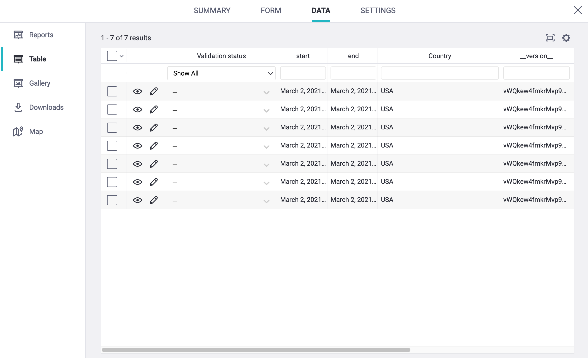
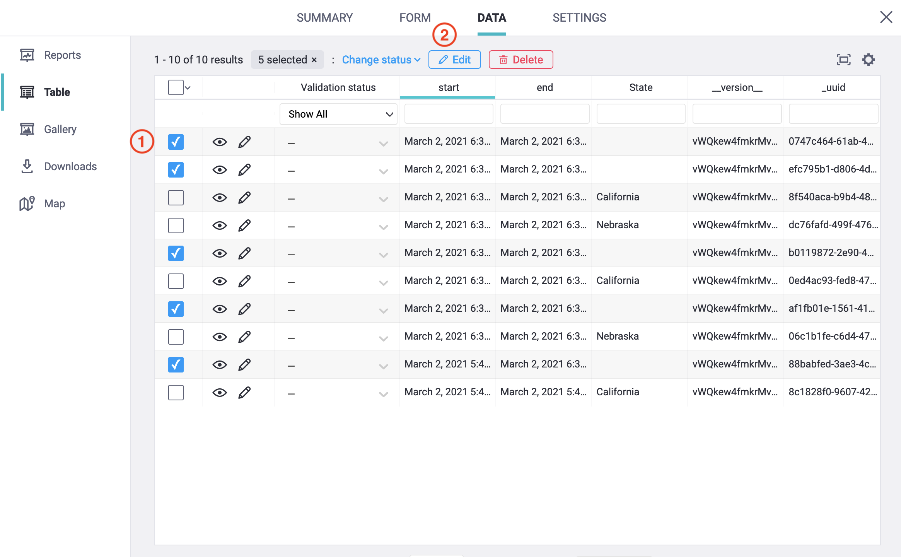
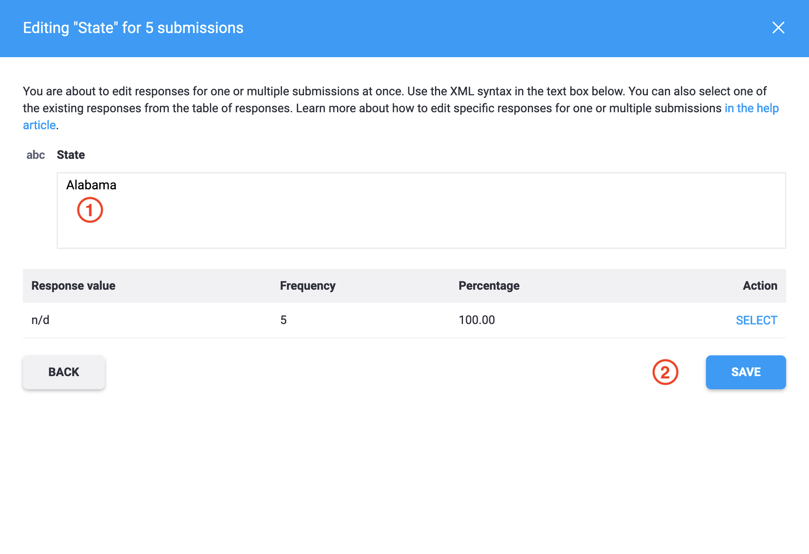

What do you need help with?
Search the knowledge base, browse our resources, and visit our forum for more detailed information
Search the knowledge base, browse our resources, and visit our forum for more detailed information
Last updated: 22 Sep 2022
Users could always edit submissions as outlined in our support article Editing or Deleting a Single Submission. What if a user has to edit repeated typo errors or update missing responses for all or most of the submissions from a particular survey project? Following the method outlined earlier should consume much time. Hence, KoboToolbox has developed a feature that should make editing straightforward, saving editing time.
There are several limitations when performing the bulk-edit actions described in this article. The same is not the case when editing individual submissions. When using this method:
Validation logic and calculations within your form are not re-evaluated.
Editing questions within repeating groups is not currently supported.
Coordinate points must follow pattern: latitude longitude altitude accuracy.
Failure to do so will not cause an error, but may confuse your data analysis.
Multiple select responses must consist of the correct choice names, separated by a space. Failure to do so will not cause an error, but will result in labels not being correctly applied when exported.
The following is a screen generally seen for DATA>Table.

The image shared above shows data input variance with the question Country ranging from America, U.S.A, US, United States of America, United States, usa to USA. This section of the support article will outline how to change all these varying Country names to USA.
Step 1:
To start editing responses for multiple submissions, users should either select a single record (marked 1) or select multiple records (marked 2). Selecting as shown in the image below should activate the edit features along with other features.

1. Users could select multiple records that require bulk editing.
2. Alternative to approach outlined above (in 1), users could select all records or all visible records under DATA>Table. All records refer to the entire records that are present within the survey project while all visible records refer to 30 records that are by default visible under DATA>Table. Users should clearly distinguish between the two when there are more than 30 records (submissions) within the survey project.
3. Shows the total number of records selected for changing/updating the validation status, bulk editing or bulk deletion.
4. Users could bulk change the validation status as outlined in our support article Record Validation.
5. Users could bulk edit the responses for multiple submissions.
6. Users could bulk delete the records.
Step 2:
Users will now have to press Edit (5 as shown in the image above) for bulk editing after selecting all the records that require modifications. The following dialogue box should then appear.

Users could filter the required question by typing it in the search filter located just below the Question header.

Users should see Multiple responses under the Response header (shown in the above image) if different values entered. Here we have a range of inputs from America, U.S.A, US, United States of America, United States, usa to USA. However, if users select a single record and press Edit, they would see the following dialogue box.

Users could now filter the required response by typing it in the search filter located just below the Response header. This approach is useful when a user wishes to edit a single record.

Step 3:
Users could press the EDIT button once it is known what to edit and where to edit.

Step 4:
So now, there are two approaches to make bulk edits. Approach 1 is when users type in the required text (USA in our case) in the blank box (marked 1.1) and then press SAVE (marked 2). Approach 2 is when users press SELECT (marked 1.2) for an appropriate text and then press SAVE (marked 2).

Step 5:
A dialogue box now appears. Users will now have to press CONFIRM & CLOSE to save the changes made.

Users could always go back to DATA>Table and check if the bulk edits were successful.

Sometimes, there may be a scenario when users have to add a question at the middle or end of the survey. In such a case, the survey data from the DATA>Table should see, as shown in the image below.

This section of the support article should outline how to change all these empty states to Alabama.
Step 1:
To start editing blank responses for multiple submissions, users should select multiple records (marked 1) and then press Edit (marked 2).

Step 2:
Users will now have to press Edit (as shown in the image below), which is in a parallel line straight to State as we are updating the empty states for all the records.

Step 3:
In this case, users should type in the required text (Alabama in our case) in the blank box (marked 1) and then press SAVE (marked 2).

Step 4:
A dialogue box appears. Users will now have to press CONFIRM & CLOSE to save the changes made.

Users could always go back to DATA>Table and check if the bulk edits were successful.

Did you find what you were looking for? Was the information clear? Was anything missing?
Share your feedback to help us improve this article!